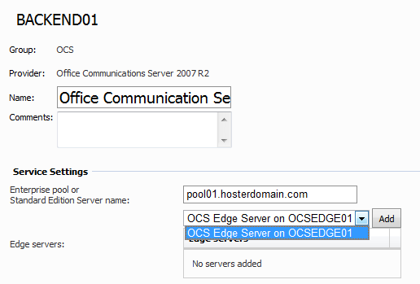
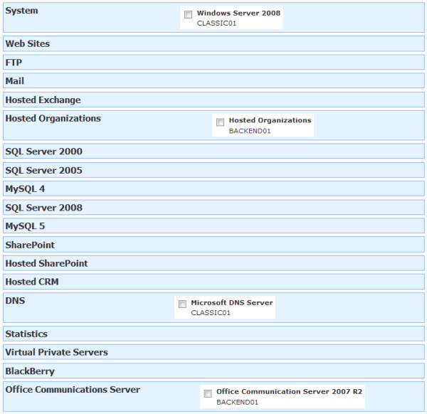
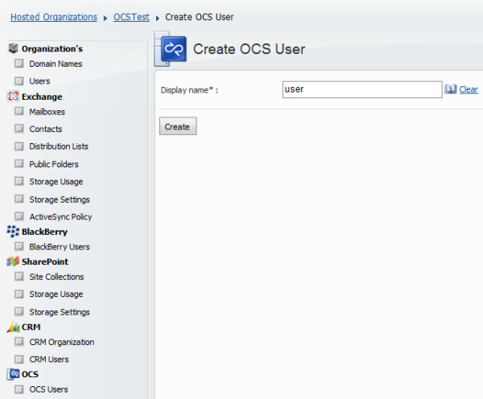

WSP Hosted OCS Solution Installation Tasks
Translations:
WSP Server account requirements
WSP Server account for WSP Server Web site anonymous access and WSP Server application pool identity must be the domain account. Add this account to RTCUniversalUserAdmins created by OCS setup.
Note that WSP Server that will manage OCS remotely from some domain member with OCS tools installed or from OCS Front End server. For OCS Edge Servers default WSO Server deployments with default account id enough.
Setting up "Active Directory Settings"
Requirements for "Active Directory Settings" for all WSP Servers where Hosted OCS module will be deployed are the same as for WSP Server where Hosted Organizations module will be deployed.

Setting up Hosted OCS Service
Ensure that "OS" service is deployed at least on one WSP server. If you are going to create Virtual Server and Hosting plan mixed with classic Web hosting - add "OS" service from WSP Server that will host websites. In case of pure OCS or mixed WSS/Exchange/CRM/OCS/BlackBerry/etc environment - use any server.
Ensure that "Hosted Organizations" module is deployed on one of the WSP Servers.
On "Office Communications Server" service specify service settings:
Enterprise pool or Standard Edition Server name. Your Enterprise pool or Standard Edition Server name. In case you use Enterprise Edition Server without pool - enter it's name here.
Edge servers. Add your Edge servers from drop-down menu.

Creating Virtual Server
It is strongly recommended to use Virtual Servers, but not Servers for Hosting plans. This greatly increases flexibility and helps you avoid problems during adding services or resources to existing customers
Select "Office Communication Server 2007 R2 " service. Do not add OCS Edge Server service or services!
Select "Hosted Organizations" service from server where you deployed it.
Select "OS" service from any server. If you are going to create Virtual Server and Hosting plan mixed with classic Web hosting - use "OS" service only from Web server.
Optionally select"Exchange 2007" services from Exchange 2007 server with Mailbox role in case (more likely) you are going to use Hosted OCS and Exchange in one Hosting Plan or add Exchange features to customers later with Add-Ons.
Optionally select other services like "Hosted SharePoint" or "Web" if you are going to use Hosted OCS and other services in one Hosting Plan or add other services to customers later with Add-Ons.
Optionally select "DNS" service from appropriate server if you use WSP-managed DNS server.This service is optional.

Creating Hosting Plan
In case you are creating mixed OCS/Exchange Hosting Plan, create plan according to this document and then add OCS option.
In case you are creating pure OCS Hosting Plan, create plan according to this document, just do not add "Exchange 2007" option and add OCS option.
Creating OCS user
Here we assume that the following steps have been already done after creating Hosting Plan:
- WSP User created by hosting provider
- Hosting Space (based on previously created Hosting Plan) for this WSP User is created by hosting provider
- Hosted Organization inside this Hosting Space is created by hosting provider or by hosting customer
- At least one user is created in Hosted Organization by hosting provider or by hosting customer
Here are steps hosting customers have to do to create OCS user:
- Go to Hosted Organizations > Customer's organization > OCSM > OCS Users
- Press "Create OCS User " button and choose existing organization's user.

- Try to connect with created OCS User with Microsoft Office Communicator. Use administrator's primary e-mail (UPN) as username.
Client connectivity automation
There are 2 options:
1. Modify Office Communicator msi file with pre-set name of your edge server and provide it for users download
2. Create reg file with modified HKEY_CURRENT_USER\Software\Microsoft\Shared\UcClient\ and provide it for users download
In any case use OCS use summary letter (will be available in one of next versions) to explain how to set communicator or other client software/devices.